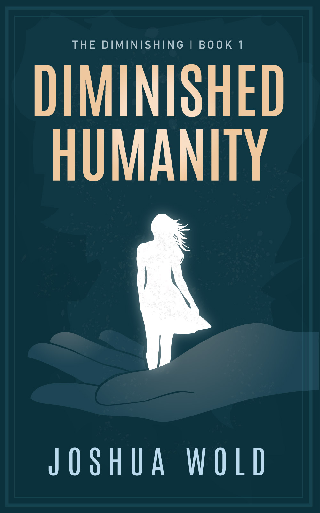

Hi. I'm Joshua Wold. In 2019 I started writing fictional stories. This turned into a fun project where I wrote seven novels and a half dozen short stories. So far I've managed to finish three of them and self-publish. If you enjoy the novels, have suggestions, or want to share any encouragement I'd love to hear from you. My stories are akin to imagining relatively normal worlds with a single element shifted; often magical in some way. The main genre I write in is magical realism. Send me an email at joshua [at] joshuawold [dot] com.

<figure>
  
  <figcaption>
    Diminished Humanity is book one in The Diminishing series. It follows the story of Kristi Collins as she realizes the world is changing around her, and growing. She is experiencing the effects of the diminishing gene. As her body shrinks Kristi must adjust and find what truly matters. 
  </figcaption>
</figure>